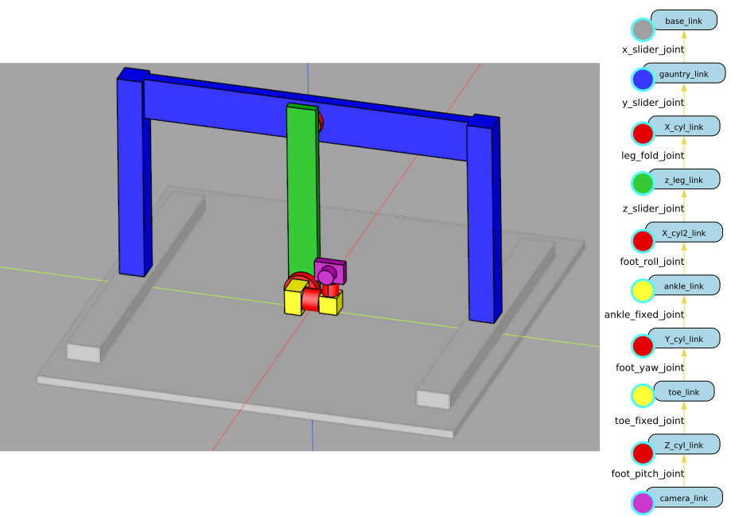
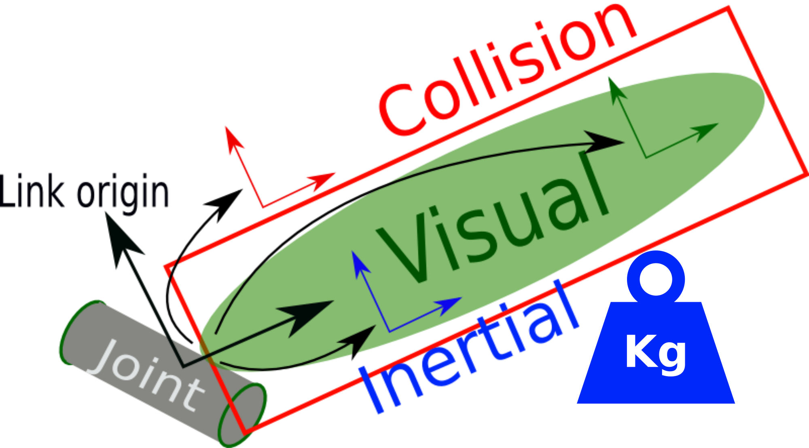
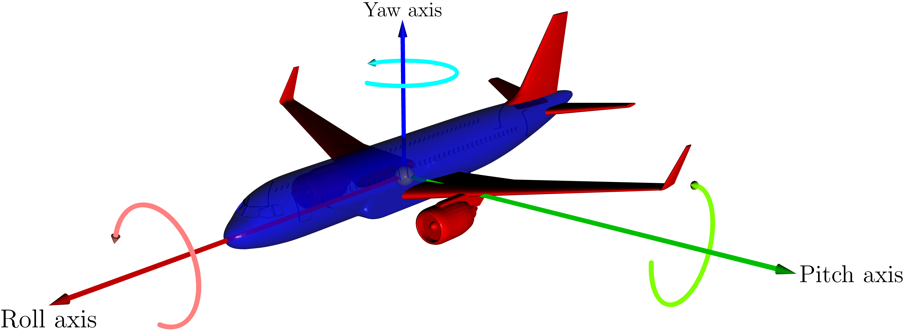
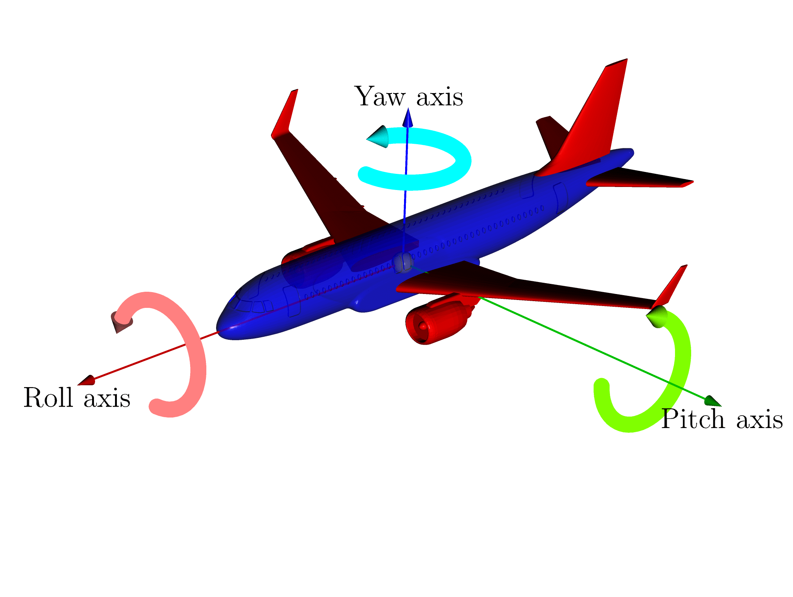
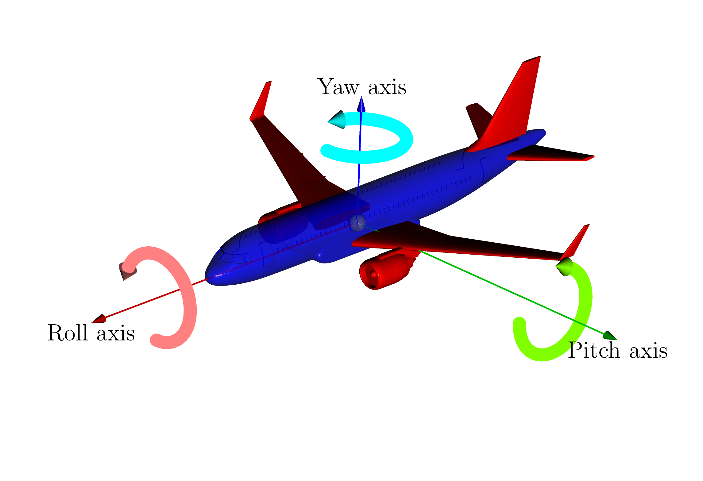
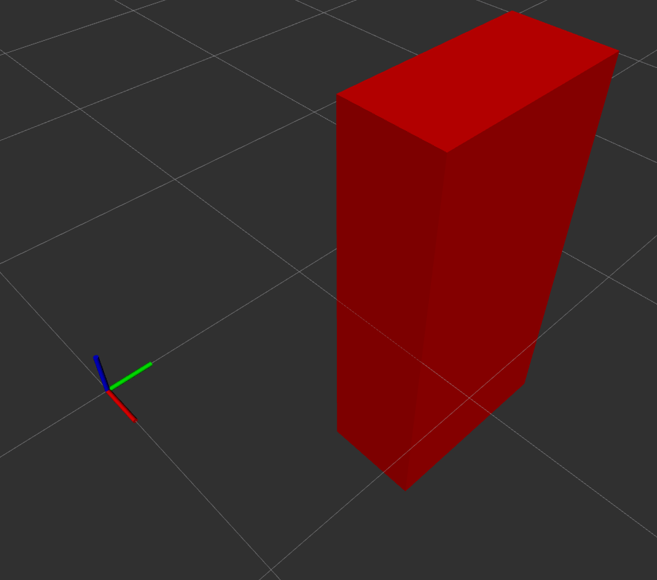
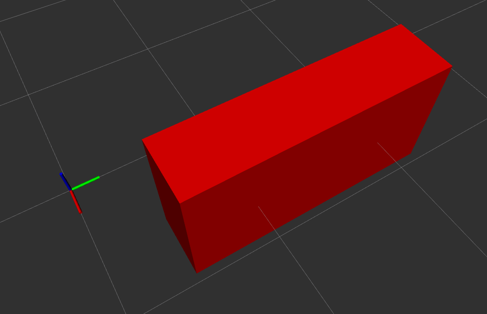

URDF pour la description de robots non parallèles
{kind=link}

Figure 7 Robot Scanbot, et sa chaîne cinmématique.
Dans le cas d’un robot non parallèle, les chaînes cinématiques sont ouvertes et on peut représenter l’ensemble des chaînes cinématiques du robot par un arbre, le chemin en ligne directe de la racine à une feuille de l’arbre correspondant à une chaîne cinématique.
Le format utilisé pour décrire les robots non parallèle dans ROS est l’URDF. Nous allons maintenant décrire la syntaxe de l’URDF.
Généralités sur le XML
L’URDF est basé sur le format XML, les éléments d’information sont organisés grâce à des balises <balise> élément </balise>, qui peuvent être imbriquées.
En anglais une balise est appelée un tag.
Tag
Un tag est une construction de balisage qui commence par <` et se termine par >. Il existe trois types de tag :
tag de début, tel que
<section>,tag de fin, tel que
</section>,tag sans élément, tel que
<line-break />(notez le symbole/devant le symbole>à la fin.
Un tag peut être sans élément, car l’information peut-être contenue dans l’attribut de la balise (attribute en anglais). En français on utilise souvent le terme balise pour désigner un tag.
Attribut
Un attribut consiste en une paire nom-valeur qui peut apparaître dans un tag de début ou un tag sans élément.
Un exemple est <link name="base_link">, où le nom de l’attribut est « name » et sa valeur est « base_link ».
Un tag peut avoir plusieurs attributs, mais chaque attribut ne peut apparaître qu’une seule fois dans une balise.
Élément
Un élément est une composante logique d’un document qui commence soit par un tag de début et se termine par un tag de fin correspondant, soit consiste uniquement en un tag sans élément. Les caractères entre la balise de début et la balise de fin, s’il y en a, sont le contenu de l’élément, et peuvent contenir du balisage, y compris d’autres éléments, appelés éléments enfants. Dans l’exemple de code suivant, Listing 4, l’élement visual, lignes 2-10, commence par le tag de début <visual>, se finit par le tag de fin </visual> et possède les éléments enfants origin, geometry et material. L’élément mass, ligne 18, est un élément sans enfant mais qui possède un attribut value et qui donc consiste en seulement un tag sans élément: <mass value="18"/>.
1<link name="${prefix}base_link">
2 <visual>
3 <origin xyz="0 0 0" rpy="0 0 0" />
4 <geometry>
5 <cylinder length="0.6" radius="0.3" />
6 </geometry>
7 <material name="kind_of_red">
8 <color rgba="0.6 0 .8 1" />
9 </material>
10 </visual>
11 <collision>
12 <origin xyz="0 0 0" rpy="0 0 0" />
13 <geometry>
14 <cylinder length="0.6" radius="0.3" />
15 </geometry>
16 </collision>
17 <inertial>
18 <mass value="10" />
19 <inertia ixx="1e-3" ixy="0.0" ixz="0.0" iyy="1e-3" iyz="0.0" izz="1e-3" />
20 <origin xyz="0 0 0" rpy="0 0 0" />
21 </inertial>
22</link>
Généralités sur l’URDF
Dans le format URDF, il existe de nombreuses balises différentes qu’il est possible d’utiliser. Elles sont toutes décrites dans la documentation officielle de ROS du format URDF . Il y en a trois principales qu’il faut connaître robot, link et joint.
Le tag robot et le préambule XML Un fichier XML correct doit avoir un préambule XML dans la première ligne, et juste après cela, il contient une balise (appelée la balise racine), dans laquelle toutes les autres balises sont imbriquées. Pour un fichier URDF, cette balise racine sera la balise robot, et la seule chose à noter ici pour l’instant est que nous pouvons définir l’attribut name qui nous permet de spécifier le nom de notre robot.
<?xml version="1.0"?>
<robot name="my_robot">
...
toutes les autres balises
...
</robot>
Les 2 balises principales de l’URDF sont link et joint et sont au même niveau d’imbrication à la base de la balise robot:
<?xml version="1.0"?>
<?xml-model href="https://raw.githubusercontent.com/ros/urdfdom/master/xsd/urdf.xsd" ?>
<robot name="my_robot" xmlns="http://www.ros.org">
<link> ... </link>
<link> ... </link>
<link> ... </link>
<joint> .... </joint>
<joint> .... </joint>
<joint> .... </joint>
</robot>
La balise link
La balise link est utilisée pour décrire un segment du robot. La description complète de cette balise est disponible dans la specification de la balise link.
1<link name="${prefix}base_link">
2 <visual>
3 <origin xyz="0 0 0" rpy="0 0 0" />
4 <geometry>
5 <cylinder length="0.6" radius="0.3" />
6 </geometry>
7 <material name="kind_of_red">
8 <color rgba="0.6 0 .8 1" />
9 </material>
10 </visual>
11 <collision>
12 <origin xyz="0 0 0" rpy="0 0 0" />
13 <geometry>
14 <cylinder length="0.6" radius="0.3" />
15 </geometry>
16 </collision>
17 <inertial>
18 <mass value="10" />
19 <inertia ixx="1e-3" ixy="0.0" ixz="0.0" iyy="1e-3" iyz="0.0" izz="1e-3" />
20 <origin xyz="0 0 0" rpy="0 0 0" />
21 </inertial>
22</link>
{kind=link}

Figure 8 Élément link d’un fichier URDF
Nous allons maintenant nous attacher à comprendre les différents repères utilisés dans la description d’un segment d’un robot et comment les définir dans un fichier URDF.
Dans le tag origin (tag visual**s ou **collision), la position et l’orientation du repère du segment par rapport au repère du parent sont définis par les attributs xyz et rpy.
La translation est définie par les attributs xyz qui sont les coordonnées x, y et z du repère du segment par rapport au repère du parent.
La rotation est définie par les attributs rpy qui sont les angles de rotation autour des axes x, y et z du repère du segment par rapport au repère du parent. rpy désigne «roll,pitch,yaw» ou en français: «roulis,tangage,lacet».
La rotation est toujours appliquée avant la translation et les rotations sont effectuées dans l’ordre roll, pitch puis yaw suivant le schéma ci-dessous:
{kind=link}

Figure 9 Rotations roll, pitch et yaw.
{kind=link}

Figure 10 Rotation autour de l’axe x (roll)

Figure 11 Rotation autour de l’axe y (pitch)
{kind=link}

Figure 12 Rotation autour de l’axe z (yaw)
Simple exemple
Créons une simple description de robot URDF.
Pour cela nous allons utiliser l’outil de visualisation de modèles URDF fourni par ROS2: rviz2.
Afin de faciliter cette étape nous allons créer un package ROS2 dédié à la visualization en utilisant l’outil développé par IRIS template2instance.
Cette outil permet de créer facilement un package ROS2 à partir d’un template.
Pour cela nous avons besoin du template view_robot_template qui est un template de package ROS2 dédié à la visualisation de robots en utilisant rviz2.
Installation de template2instance
Installer poetry en suivant les instructions du site officiel.
Créer un répertoire system dans votre workspace ROS2. Ajoutez un fichier COLCON_IGNORE dans ce répertoire pour éviter que les packages créés par template2instance soient compilés par colcon, le système de build de ROS2.
mkdir -p ~/ros2_ws/system
touch ~/ros2_ws/system/COLCON_IGNORE
Copier le module python template2instance dans le répertoire ros2_ws/system de votre workspace ROS2.
Exécutez la commande suivante:
cd ~/ros2_ws/system/template2instance && poetry install && cd -
Copier le template view_robot_template dans le répertoire ros2_ws/system de votre workspace ROS2.
template2instance est un outil python utilisant le gestionnaire de dépendances poetry qui s’utilise de la manière suivante:
poetry run create path_to_template path_to_new_package [--config path_to_config.json]
Créons un package ROS2 nommé simple_bot_description ayant le fichier de configuration suivant.
{
"PACKAGE_NAME": "simple_bot_description",
"PACKAGE_VERSION": "1.0.0",
"PACKAGE_DESCRIPTION": "Launch file to view the robot",
"PACKAGE_MAINTAINER_EMAIL": "yguel.robotics@gmail.com",
"PACKAGE_MAINTAINER_NAME": "Manuel YGUEL",
"PACKAGE_LICENSE": "MIT",
"YEAR": 2024,
"LABORATORY": "Unistra, ICube/IRIS",
"LICENSE_TEXT": "\n# This file is licensed under the MIT License.\n# You may obtain a copy of the License at https://opensource.org/licenses/MIT\n",
"ROBOT_NAME": "simple_bot"
}
Télécharger le fichier de configurationet le copier dans le répertoire~/ros2_ws/system/template2instance/configs/pkg_gen_cfg_view_simple_bot.json.Exécuter la commande suivante:
cd ~/ros2_ws/system/template2instance && poetry run create ~/ros2_ws/system/view_robot_template ~/ros2_ws/src/simple_bot_description --config ~/ros2_ws/system/template2instance/configs/pkg_gen_cfg_view_simple_bot.json && cd -
Testez le package en le compilant:
cd ~/ros2_ws
ros2_humble
ros2_build_only simple_bot_description
Lancez le package:
ros2 launch simple_bot_description view_simple_bot.launch.py
Si tout s’est bien passé, vous devriez voir un dans rviz2 le robot par défaut:

Figure 13 Le robot par défaut à l’initialisation d’un package de visualisation à partir du template view_robot_template.
Le fichier URDF qu’il faut étudier se nomme simple_bot_macro.xacro et se trouve dans le répertoire ~/ros2_ws/src/simple_bot_description/urdf/simple_bot.
C’est un fichier de type xacro, c’est-à-dire un fichier XML qui peut contenir des macros.
Ces macros permettent de définir des éléments qui peuvent être réutilisés plusieurs fois dans le fichier ou déduit par des appels à des fonctions.
Le format cependant est celui d’un fichier URDF et par abus de language nous parlerons de fichier URDF.
Ouvrez ce fichier et modifiez le pour qu’il ressemble à ceci:
1<?xml version="1.0" encoding="UTF-8"?>
2<robot xmlns:xacro="http://wiki.ros.org/xacro">
3
4 <xacro:macro name="simple_bot" params="prefix parent *origin">
5 <!-- LINKS -->
6 <!-- base link -->
7 <link name="${prefix}base_link">
8 <visual>
9 <origin xyz="0 0 0" rpy="0 0 0" />
10 <geometry>
11 <cylinder length="0.6" radius="0.3" />
12 </geometry>
13 <material name="red" />
14 </visual>
15 </link>
16 <!-- END LINKS -->
17
18 <!-- JOINTS -->
19 <!-- base_joint fixes base_link to the environment -->
20 <joint name="${prefix}base_joint" type="fixed">
21 <origin xyz="0 0 0" rpy="0 0 0" />
22 <parent link="${parent}" />
23 <child link="${prefix}base_link" />
24 </joint>
25 <!-- END JOINTS -->
26 </xacro:macro>
27</robot>

Figure 14 Affichage d’un segment cylindre avec RVIZ correspondant à la précédente description URDF
Fermez toutes les fenêtre et tapez CTRL-C dans le terminal puis relancez le package:
ros2 launch simple_bot_description view_simple_bot.launch.py
La Figure 14 montre le segment cylindre tel qu’il devrait s’afficher dans rviz2.
Pour comprendre comment les systèmes de coordonnées fonctionnent, il faut afficher les axes. Dans rviz:
dans le panneau de gauche (“”Displays””), dans RobotModel modifiez la valeur de Alpha à 0.5. Cela change la transparence du modèle du robot et permet de voir les axes.
Si vous ne voyez pas les axes, vérifiez que vous avez bien un TF et sinon ajoutez un TF dans le panneau de gauche (“”Displays””) avec le bouton Add. Et vérifiez bien que Show Axes est coché.

Figure 15 Affichage d’un segment cylindre avec RVIZ avec les axes visibles (Alpha=0.5, Show Axes : coché)
Segments définis par des primitives géométriques
Un segment peut être défini à partir de 3 formes géométriques de base:
pavé droit:
<box size="10 20 40"/>. Les tailles des côtés (“”size””) sont données dans l’ordre x,y,z. Les côtés du pavé droit sont parallèles aux axes x, y et z.cylindre:
<cylinder radius="10" length="40"/>l’axe est toujours l’axe z.sphère:
<sphere radius="10"/>
Dans ce cas le repère du segment est par défaut au centre de la forme géométrique (centre de gravité).
Nous allons modifier la forme pour utiliser un pavé droit. Cela nous permettra de bien visualiser l’orientation de la forme dans les 3 dimensions.
Et nous allons modifier l’élément origin pour déplacer le segment par rapport à son origine.
Modifiez donc le fichier URDF pour qu’il ressemble à ceci:
1<?xml version="1.0" encoding="UTF-8"?>
2<robot xmlns:xacro="http://wiki.ros.org/xacro">
3
4 <xacro:macro name="simple_bot" params="prefix parent *origin">
5 <!-- LINKS -->
6 <!-- base link -->
7 <link name="${prefix}base_link">
8 <visual>
9 <origin xyz="0.5 1.5 0" rpy="0 0 0" />
10 <geometry>
11 <box size="0.5 1 2" />
12 </geometry>
13 <material name="red" />
14 </visual>
15 </link>
16 <!-- END LINKS -->
17
18 <!-- JOINTS -->
19 <!-- base_joint fixes base_link to the environment -->
20 <joint name="${prefix}base_joint" type="fixed">
21 <origin xyz="0 0 0" rpy="0 0 0" />
22 <parent link="${parent}" />
23 <child link="${prefix}base_link" />
24 </joint>
25 <!-- END JOINTS -->
26 </xacro:macro>
27</robot>
{kind=link}

Figure 16 Affichage d’un segment pavé droit avec RVIZ correspondant à la description URDF sur la gauche
Nous allons modifier l’élément origin pour tourner le segment de 90 degrées autour de l’axe de roulis: X (roll).
Notez l’ordre des transformations géométriques
Les transformations géométriques sont effectuées dans l’ordre suivant: rotation puis translation.
1<?xml version="1.0" encoding="UTF-8"?>
2<robot xmlns:xacro="http://wiki.ros.org/xacro">
3
4 <xacro:macro name="simple_bot" params="prefix parent *origin">
5 <!-- LINKS -->
6 <!-- base link -->
7 <link name="${prefix}base_link">
8 <visual>
9 <origin xyz="0.5 1.5 0" rpy="${radians(90)} 0 0" />
10 <geometry>
11 <box size="0.5 1 2" />
12 </geometry>
13 <material name="red" />
14 </visual>
15 </link>
16 <!-- END LINKS -->
17
18 <!-- JOINTS -->
19 <!-- base_joint fixes base_link to the environment -->
20 <joint name="${prefix}base_joint" type="fixed">
21 <xacro:insert_block name="origin" />
22 <parent link="${parent}" />
23 <child link="${prefix}base_link" />
24 </joint>
25 <!-- END JOINTS -->
26 </xacro:macro>
27</robot>
{kind=link}

Figure 17 Affichage d’un segment pavé droit avec RVIZ correspondant à la description URDF sur la gauche
Notez bien ce qui est déplacé par les attributs xyz et rpy de la balise origin
Ce n’est pas l’origine du repère qui est déplacée mais le repère dans lequel la forme géométrique est définie.
En effet si on met le paramètre alpha à 0.5 pour voir en transparence, le centre du pavé ne contient pas de repère.
On verra dans ce qui suit la différence avec les changements dans la balise origin des articulations avec la description du tag joint.
Un point Xacro et fichiers launch
Regardons l’organisation du projet ROS2 simple_bot_description (après y avoir ajouté divers fichiers URDF):
.
├── CMakeLists.txt
├── config
├── doc
├── launch
│ └── view_simple_bot.launch.py
├── meshes
│ ├── collision
│ └── visual
├── package.xml
├── README.md
├── rviz
│ └── simple_bot.rviz
├── test
│ └── simple_bot_test_urdf_xacro.py
└── urdf
├── common
│ ├── inertials.xacro
│ └── materials.xacro
├── simple_bot
│ ├── simple_bot_macro.xacro
│ ├── simple_bot__my01_bot__macro.xacro
│ ├── simple_bot__my02_tr_bot__macro.xacro
│ ├── simple_bot__my02_tr_plus_rot_bot__macro.xacro
│ ├── simple_bot__my03_bot__macro.xacro
│ └── simple_bot__my04_bot__macro.xacro
└── simple_bot.urdf.xacro
Que se passe-t-il quand nous lançons le package simple_bot_description avec la commande suivante ?
ros2 launch simple_bot_description view_simple_bot.launch.py
Le fichier view_simple_bot.launch.py est exécuté.
1# Copyright (c) 2024, Unistra, ICube/IRIS
2#
3#
4# This file is licensed under the MIT License.
5# You may obtain a copy of the License at https://opensource.org/licenses/MIT
6
7
8#
9# The template of this file is taken from source https://github.com/StoglRobotics/ros_team_workspace repository.
10# Copyright (c) 2024, Stogl Robotics Consulting UG (haftungsbeschränkt) (template)
11# Author of the template: Dr. Denis
12#
13
14from launch import LaunchDescription
15from launch.actions import DeclareLaunchArgument
16from launch.substitutions import Command, FindExecutable, LaunchConfiguration, PathJoinSubstitution
17from launch_ros.actions import Node
18from launch_ros.substitutions import FindPackageShare
19
20def generate_launch_description():
21 # Declare arguments
22 declared_arguments = []
23 declared_arguments.append(
24 DeclareLaunchArgument(
25 "description_package",
26 default_value="simple_bot_description",
27 description="Description package of the simple_bot. Usually the argument is not set, \
28 it enables use of a custom description.",
29 )
30 )
31 declared_arguments.append(
32 DeclareLaunchArgument(
33 "prefix",
34 default_value='""',
35 description="Prefix of the joint names, useful for \
36 multi-robot setup. If changed than also joint names in the controllers' configuration \
37 have to be updated.",
38 )
39 )
40
41 # Initialize Arguments
42 description_package = LaunchConfiguration("description_package")
43 prefix = LaunchConfiguration("prefix")
44
45 # Get URDF via xacro
46 robot_description_content = Command(
47 [
48 PathJoinSubstitution([FindExecutable(name="xacro")]),
49 " ",
50 PathJoinSubstitution(
51 [FindPackageShare(description_package), "urdf", "simple_bot.urdf.xacro"]
52 ),
53 " ",
54 "prefix:=",
55 prefix,
56 " ",
57 ]
58 )
59
60 robot_description = {"robot_description": robot_description_content}
61
62 rviz_config_file = PathJoinSubstitution(
63 [FindPackageShare(description_package), "rviz", "simple_bot.rviz"]
64 )
65
66 joint_state_publisher_node = Node(
67 package="joint_state_publisher_gui",
68 executable="joint_state_publisher_gui",
69 )
70 robot_state_publisher_node = Node(
71 package="robot_state_publisher",
72 executable="robot_state_publisher",
73 output="both",
74 parameters=[robot_description],
75 )
76 rviz_node = Node(
77 package="rviz2",
78 executable="rviz2",
79 name="rviz2",
80 output="log",
81 arguments=["-d", rviz_config_file],
82 )
83
84 return LaunchDescription(
85 declared_arguments
86 + [
87 joint_state_publisher_node,
88 robot_state_publisher_node,
89 rviz_node,
90 ]
91 )
On voit que dans les lignes 45 à 58, le fichier xacro simple_bot.urdf.xacro qui se trouve dans le répertoire ~/ros2_ws/src/simple_bot_description/urdf/ est transformé en fichier URDF.
1<?xml version="1.0" encoding="UTF-8"?>
2<robot xmlns:xacro="http://wiki.ros.org/xacro" name="simple_bot">
3
4 <!-- Use this if parameters are set from the launch file, otherwise delete -->
5 <xacro:arg name="prefix" default="" />
6
7 <xacro:arg name="use_mock_hardware" default="false" />
8 <xacro:arg name="mock_sensor_commands" default="false" />
9 <xacro:arg name="sim_gazebo_classic" default="false" />
10 <xacro:arg name="sim_gazebo" default="false" />
11 <xacro:arg name="simulation_controllers" default="" />
12
13 <xacro:include filename="$(find simple_bot_description)/urdf/simple_bot/simple_bot_macro.xacro" />
14
15 <!-- create link fixed to the "world" -->
16 <link name="world" />
17
18 <!-- Load robot's macro with parameters -->
19 <!-- set prefix if multiple robots are used -->
20 <xacro:simple_bot prefix="$(arg prefix)" parent="world">
21 <origin xyz="0 0 0" rpy="0 0 0" /> <!-- position robot in the world -->
22 </xacro:simple_bot>
23
24</robot>
À la ligne 13, on voit une coommande xacro qui permet d’inclure un autre fichier xacro.
Cette commande est déclarée grâce à un tag xacro:include et utilise une autre commande dont le nom est find qui permet de trouver le chemin d’un package dans le répertoire install du workspace et dont la valeur de retour est accédée avec la syntaxe $(find simple_bot_description).
Dans le Listing 9, vous avez peut-être remarqué une autre commande xacro bien pratique qui permet de manipuler des angles en degrés et de les convertir en radians: ${radians(90)}.
Appel de fonction dans une commande xacro
Notez que quand on fait un appel de fonction dans une commande xacro, on utilise des accolades au lieu des paranthèses pour les premiers délimiteurs de la commande.
Un fichier python xxxxx.launch.py peut utiliser des arguments en ligne de commande.
Dans le fichier ci-dessus lignes 23-39 sont définis 2 arguments:
le nom par défaut du package (
description_package)le prefix qui peut être appliqué devant le path de chaque resource, ce qui permet de réutiliser le même fichier de launch pour plusieurs instances d’objets, des robots par exemple, dans le cas d’une flotte de robots.
La syntaxe est:
declared_arguments.append(
DeclareLaunchArgument(
"name_of_the_argument_for_the_python_launch_file",
default_value='default argument value',
description="Description given to the user \
when he/she is using the --help command \
or when documentation is automatically generated.",
)
)
La valeur d’un paramètre est ensuite récupérée en utilisant la fonction LaunchConfiguration du module launch.substitutions (lignes 42-43).
Il est ensuite possible d’utiliser les valeurs récupérées pour réaliser des substitutions dans les fichiers de configuration, par exemple ligne 45-58, la commande xacro est appelée sur le fichier simple_bot.urdf.xacro en fournissant comme paramètre prefix:="" (ici le prefix est la chaîne de caractère vide).
Pour visualiser facilement plusieurs descriptions de robots différentes dans rviz2 et suivre les transformations des repères, il est intéressant de créer plusieurs fichiers xacro sur le modèle du fichier simple_bot_macro.xacro.
Par exemple nous avons crée les fichiers:
simple_bot__my01_bot__macro.xacro
simple_bot__my02_tr_bot__macro.xacro
simple_bot__my02_tr_plus_rot_bot__macro.xacro
simple_bot__my03_bot__macro.xacro
simple_bot__my04_bot__macro.xacro
que vous n’avez pas encore et qui apparaissent dans l’arborescence du package simple_bot_description affichée plus haut.
pour modifier que quelques paramètres.
Exercice xacro / launch file
Modifiez les fichiers view_simple_bot.launch.py et simple_bot.urdf.xacro pour que le fichier affiché par rviz2 soit paramétrable et par exemple affiche le fichier simple_bot__my03_bot__macro.xacro quand on lance la commande:
ros2 launch simple_bot_description view_simple_bot.launch.py urdf:=simple_bot__my03_bot__macro.xacro
Afficher la solution de l’exercice
Modifications du fichier view_simple_bot.launch.py:
1# Copyright (c) 2024, Unistra, ICube/IRIS
2#
3#
4# This file is licensed under the MIT License.
5# You may obtain a copy of the License at https://opensource.org/licenses/MIT
6
7
8#
9# The template of this file is taken from source https://github.com/StoglRobotics/ros_team_workspace repository.
10# Copyright (c) 2024, Stogl Robotics Consulting UG (haftungsbeschränkt) (template)
11# Author of the template: Dr. Denis
12#
13
14from launch import LaunchDescription
15from launch.actions import DeclareLaunchArgument
16from launch.substitutions import Command, FindExecutable, LaunchConfiguration, PathJoinSubstitution
17from launch_ros.actions import Node
18from launch_ros.substitutions import FindPackageShare
19
20def generate_launch_description():
21 # Declare arguments
22 declared_arguments = []
23 declared_arguments.append(
24 DeclareLaunchArgument(
25 "description_package",
26 default_value="simple_bot_description",
27 description="Description package of the simple_bot. Usually the argument is not set, \
28 it enables use of a custom description.",
29 )
30 )
31 declared_arguments.append(
32 DeclareLaunchArgument(
33 "prefix",
34 default_value='""',
35 description="Prefix of the joint names, useful for \
36 multi-robot setup. If changed than also joint names in the controllers' configuration \
37 have to be updated.",
38 )
39 )
40 declared_arguments.append(
41 DeclareLaunchArgument(
42 'urdf', # name of the argument (what you type on CLI)
43 default_value='simple_bot__my02_bot__macro.xacro', # fallback if not set via CLI
44 description='The xacro file holding the urdf description for the robot'
45 )
46 )
47
48 # Initialize Arguments
49 description_package = LaunchConfiguration("description_package")
50 prefix = LaunchConfiguration("prefix")
51 urdf = LaunchConfiguration("urdf")
52
53 # Get URDF via xacro
54 robot_description_content = Command(
55 [
56 PathJoinSubstitution([FindExecutable(name="xacro")]),
57 " ",
58 PathJoinSubstitution(
59 [FindPackageShare(description_package), "urdf", "simple_bot.urdf.xacro"]
60 ),
61 " ",
62 "prefix:=",
63 prefix,
64 " ",
65 "bot_urdf:=",
66 urdf,
67 " ",
68 ]
69 )
70
71 robot_description = {"robot_description": robot_description_content}
72
73 rviz_config_file = PathJoinSubstitution(
74 [FindPackageShare(description_package), "rviz", "simple_bot.rviz"]
75 )
76
77 joint_state_publisher_node = Node(
78 package="joint_state_publisher_gui",
79 executable="joint_state_publisher_gui",
80 )
81 robot_state_publisher_node = Node(
82 package="robot_state_publisher",
83 executable="robot_state_publisher",
84 output="both",
85 parameters=[robot_description],
86 )
87 rviz_node = Node(
88 package="rviz2",
89 executable="rviz2",
90 name="rviz2",
91 output="log",
92 arguments=["-d", rviz_config_file],
93 )
94
95 return LaunchDescription(
96 declared_arguments
97 + [
98 joint_state_publisher_node,
99 robot_state_publisher_node,
100 rviz_node,
101 ]
102 )
Modifications du fichier simple_bot.urdf.xacro:
1<?xml version="1.0" encoding="UTF-8"?>
2<robot xmlns:xacro="http://wiki.ros.org/xacro" name="simple_bot">
3
4 <!-- Use this if parameters are set from the launch file, otherwise delete -->
5 <xacro:arg name="prefix" default="" />
6
7 <xacro:arg name="use_mock_hardware" default="false" />
8 <xacro:arg name="mock_sensor_commands" default="false" />
9 <xacro:arg name="sim_gazebo_classic" default="false" />
10 <xacro:arg name="sim_gazebo" default="false" />
11 <xacro:arg name="simulation_controllers" default="" />
12
13 <xacro:include filename="$(find simple_bot_description)/urdf/simple_bot/$(arg bot_urdf)" />
14
15 <!-- create link fixed to the "world" -->
16 <link name="world" />
17
18 <!-- Load robot's macro with parameters -->
19 <!-- set prefix if multiple robots are used -->
20 <xacro:simple_bot prefix="$(arg prefix)" parent="world">
21 <origin xyz="0 0 0" rpy="0 0 0" /> <!-- position robot in the world -->
22 </xacro:simple_bot>
23
24</robot>
La balise joint
La balise joint est utilisée pour décrire une articulation entre deux segments du robot. La description complète de cette balise est disponible dans la specification de la balise joint.
1<joint name="r_joint" type="revolute">
2 <origin xyz="0 0 1" rpy="0 0 ${radians(90)}" />
3 <parent link="link1" />
4 <child link="link2" />
5 <axis xyz="0 0 1" />
6
7 <limit effort="${radians(30)}" velocity="1.0" lower="${radians(-90)}" upper="${radians(90)}" />
8</joint>
joint de type floating avec les éléments origin, parent, child, limit, dynamics, calibration, safety_controller et mimic 1<joint name="f_joint" type="floating">
2 <origin xyz="0 0 1" rpy="0 0 3.1416" />
3 <parent link="link1" />
4 <child link="link2" />
5
6 <calibration rising="0.0" />
7 <dynamics damping="0.0" friction="0.0" />
8 <limit effort="30" velocity="1.0" lower="-2.2" upper="0.7" />
9 <safety_controller k_velocity="10" k_position="15" soft_lower_limit="-2.0"
10 soft_upper_limit="0.5" />
11 <mimic joint="joint_name" multiplier="1.0" offset="0.0" />
12</joint>

Figure 18 Élément joint d’un fichier URDF
L’attribut type de la balise joint permet de définir le type de l’articulation (revolute, prismatic, continuous, fixed, floating ou planar).
revolute: articulation de type pivot d’axe avec des butées.
prismatic: articulation de type glissière.
continuous: articulation de type pivot d’axe avec une rotation continue (comme pour une roue).
fixed: articulation de type encastrement (fixe).
floating: articulation de type flottante (6 degrés de liberté).
planar: articulation de type appui plan (2 degrés de liberté en translation et 1 degré de liberté en rotation).
Les éléments de la balise joint que nous utiliserons le plus, sont:
origin: qui définit la position et l’orientation du repère de l’articulation par rapport au repère du parent.
parent: qui définit le nom du segment parent.
child: qui définit le nom du segment enfant.
type: qui définit le type de l’articulation (
revolute,prismatic,continuous,fixed,floatingouplanar).axis: qui définit l’axe de rotation ou de translation de l’articulation utilisée uniquement pour toutes les articulations exceptée
fixedetfloating. Sa valeur par défaut est un axe unitaire parallèle à l’axe x du repère de l’articulation \((1,0,0)\). Cet axe correspond: à l’axe de rotation pour les articulations de typerevoluteetcontinuous, à l’axe de translation pour les articulations de typeprismaticet à la normal du plan d’appui pour les articulations de typeplanar.limit: qui définit les limites de l’articulation, nécessaire que pour les articulations de type
revoluteouprismatic. Les limites sont définies par les attributs lower et upper qui sont les valeurs minimale et maximale de l’articulation (en radians pour l’articulation de typerevoluteet en mètres pour l’articulation de typeprismatic), par l’attribut effort qui est la force maximale que l’articulation peut supporter (en Newtons-mètres pour les articulations de typerevoluteetcontinuous, mesurant donc un couple et en Newtons pour une articulation de typeprismatic), et par l’attribut velocity qui est la vitesse maximale de l’articulation (en radians par seconde pour les articulations de typerevoluteetcontinuouset en mètres par seconde pour l’articulation de typeprismatic).
Dans le tag origin du tag joint, la position et l’orientation du repère de l’articulation par rapport au repère du parent sont définis par les attributs xyz et rpy.
De la même manière pour les segments (link), la rotation est appliquée avant la translation.
Dans RVIZ2, cette transformation est visible grâce à une arrête jaune terminée par une flêche qui pointe du repère enfant vers le repère parent.
1<?xml version="1.0" encoding="UTF-8"?>
2<robot xmlns:xacro="http://wiki.ros.org/xacro">
3
4 <xacro:macro name="simple_bot" params="prefix parent *origin">
5 <!-- LINKS -->
6 <!-- base link -->
7 <link name="${prefix}base_link">
8 <visual>
9 <origin xyz="0.5 1.5 0" rpy="0 0 0" />
10 <geometry>
11 <box size="0.5 1 2" />
12 </geometry>
13 <material name="red" />
14 </visual>
15 </link>
16 <!-- END LINKS -->
17
18 <!-- JOINTS -->
19 <!-- base_joint fixes base_link to the environment -->
20 <joint name="${prefix}base_joint" type="fixed">
21 <origin xyz="2 0 0" rpy="0 0 0" />
22 <parent link="${parent}" />
23 <child link="${prefix}base_link" />
24 </joint>
25 <!-- END JOINTS -->
26 </xacro:macro>
27</robot>

Figure 19 Affichage d’une articulation avec RVIZ correspondant à la description URDF sur la gauche. Le lien est modélisé par la flèche jaune de base_link vers world (en cochant la case Show Arrows).
Le changement de repère introduit par le tag origin de la balise joint s’effectue avant la transofrmation du segment (balise link).
De même que pour la balise joint, la rotation est effectuée avant la translation (le repère tourne autour de l’origine du repère parent, puis est translaté). La rotation et la translation sont exprimées dans le repère du parent.
1<?xml version="1.0" encoding="UTF-8"?>
2<robot xmlns:xacro="http://wiki.ros.org/xacro">
3
4 <xacro:macro name="simple_bot" params="prefix parent *origin">
5 <!-- LINKS -->
6 <!-- base link -->
7 <link name="${prefix}base_link">
8 <visual>
9 <origin xyz="0.5 1.5 0" rpy="0 0 0" />
10 <geometry>
11 <box size="0.5 1 2" />
12 </geometry>
13 <material name="red" />
14 </visual>
15 </link>
16 <!-- END LINKS -->
17
18 <!-- JOINTS -->
19 <!-- base_joint fixes base_link to the environment -->
20 <joint name="${prefix}base_joint" type="fixed">
21 <origin xyz="2 0 0" rpy="0 0 ${radians(90)}" />
22 <parent link="${parent}" />
23 <child link="${prefix}base_link" />
24 </joint>
25 <!-- END JOINTS -->
26 </xacro:macro>
27</robot>

Figure 20 Rotation du repère de l’articulation en plus de la translation. Notez que la rotation est effectuée avant la translation (si cela avait été l’inverse, l’arrête jaune serait alignée avec l’axe vert du repère world).